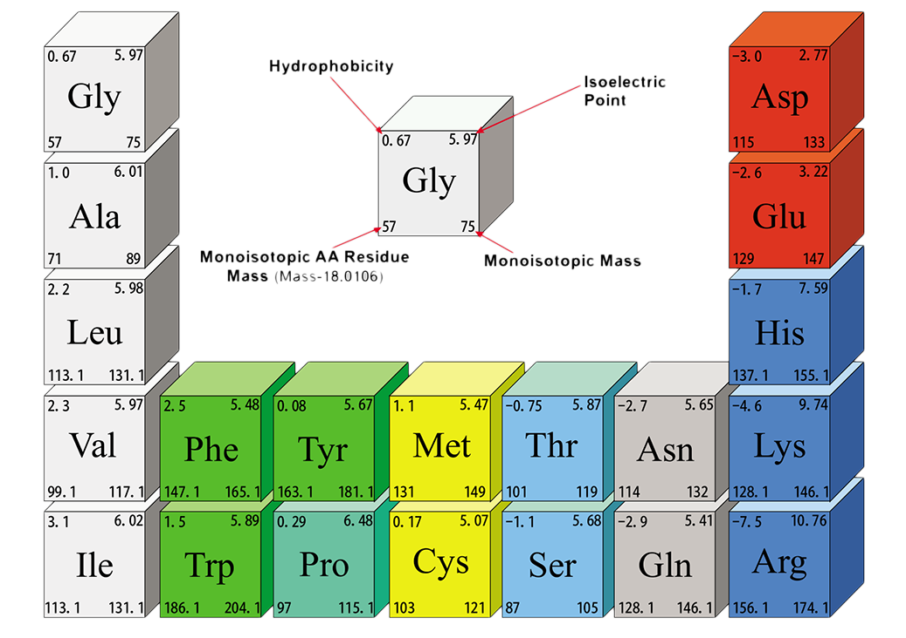

-

- ආහාර පිසිමේදී හෝ සකස් කිරිමේදි ඒවායේ අඩංගු ඇමයිනෝ අම්ල විශාල ලෙස හීනවීමට හෝ ප්රයෝජනවත් නොවන ආකාරයට පත්විමේ හෝ හැකියාව ඇත.කර කරන ලද (ටෝස්ට් කරන ලද) පාන් හෝ බඳින ලද අර්තාපල් පෙති සිත්ලන්නා සුලු පෙනුමකින් යුක්ත වුවත් ඒවායේ අත්යාවශ්ය ඇමයිනෝ අම්ල ගුණ හානි වි පවති.මෙසේ වින වි යන ඇමයිනෝ අම්ල අතර ලයිසීන් ප්රමුඛ ස්ථානයක් ගනු ලබයි.යම්කිසි ආහාරයක ඇමයිනෝ අම්ල හීනවි යාමේ සිඝ්රතාව එය භාජනය වි ඇති උෂ්ණත්වයේ තදබපල බව මත රඳා පවති.
නමුත් ආහාර ඉහළ උෂ්ණත්වයට ලක් කිරිම සැම විටම අහිතකර වේ යැයි යන සිතුවිල්ලෙන් බැහැර විය යුතුය. උෂ්ණත්වය ලබා දිම නිසා ලද හැකි හිතකර ප්රතිථලද බොහෝමයකි.මේවා අතර ට්රිප්සීන් වැනි ප්රති -පෝෂක විනාශවිම ,විවිධ ආහාර වල අඩංගු වි හැකි ඇතැම් විෂ ද්රව්ය හුමාලය සමග ඉවත්ව යාම. (උදා :- මඤ්ඤොක්කා විවෘත භාජනයක තැම්බිමේ දි එහි යම් විෂක් පවති නම් හුමාලය සදග පිටව යයි.) උනුසුම් ආහාර මගින් ආහාර රුචිය වැඩි කිරිම ආදිය මෙසේ ලද හැකි වාසි වලින් කිහිපයක් පමණි.
සටහන
පියළි භෝග ප්රෙරා්හණය මඟින් එහි වු පෝෂණ ගුණනය සහ ඩිරිණය විමේ හැකියාව දියුණු වේ. ප්රරෝහණයේදි විටම්න් ඛණිජ ලවණ සහ එන්සයිම ගුණ වර්ධනය වේ.එමනිසා යන්තමින් මුල් ඇදි ඇති අවස්ථාවේ පවතින බීජ වල (ප්රරෝහණය ආරම්භ වු අවස්ථාවේ පවතින) පෝෂණ ගුණය ඉළය.